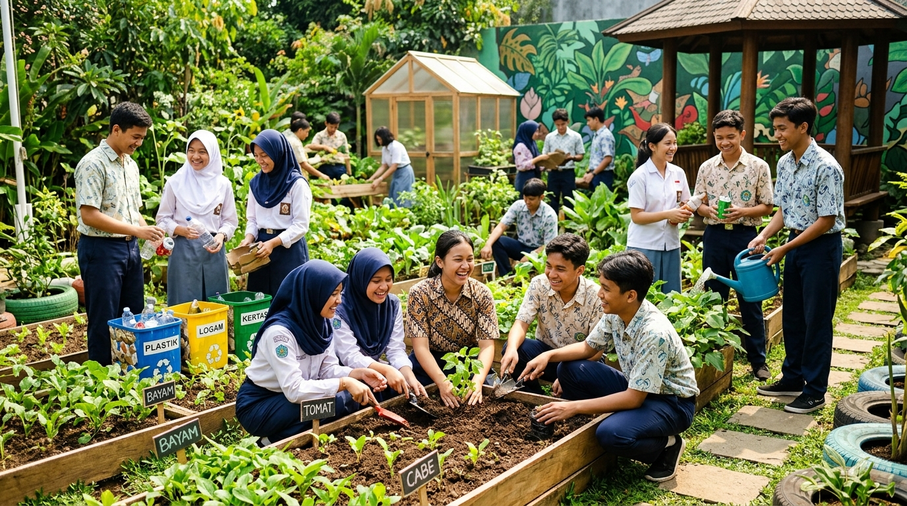

Komunitas & Kampanye Aksi Nyata Bagi Bumi
Perubahan besar dimulai dari solidaritas kelompok. Temukan agenda restorasi alam terdekat, daftarkan komitmen Anda, dan jadilah bagian dari jejaring generasi hijau.

Aksi Kolektif, Dampak Berkelanjutan
Melalui EcoLoka, setiap pelajar dan komunitas memiliki wadah nyata untuk mengorganisasi kampanye lingkungan lokal. Mulai dari pemilahan sampah di kantin sekolah hingga penanaman bibit pohon di ruang publik, teknologi menjadi jembatan transparansi dan motivasi bersama.
785 dari 1.000 Aksi Hijau Berhasil Terealisasi
Kampanye & Kegiatan yang Sedang Berjalan
Pilih kegiatan yang sesuai dengan minat Anda dan daftarkan diri pada formulir di bawah.
Memuat daftar inisiatif komunitas...
Formulir Komitmen Partisipasi Relawan
Daftarkan diri Anda untuk terlibat dalam agenda pelestarian alam komunitas EcoLoka. Draf pendaftaran akan disimpan secara aman di peramban Anda.